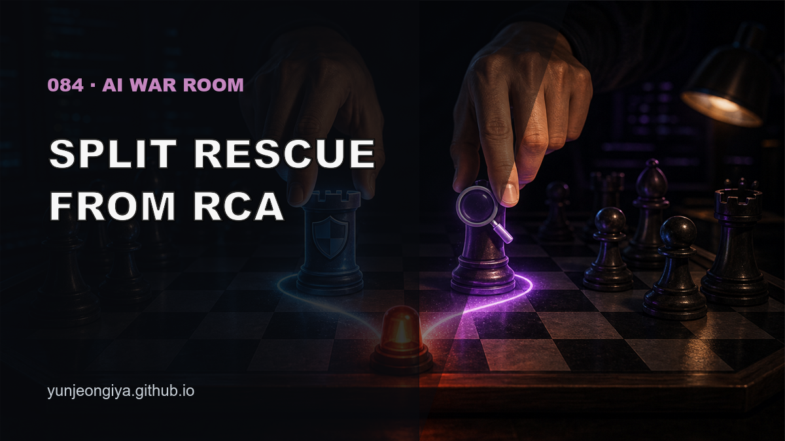
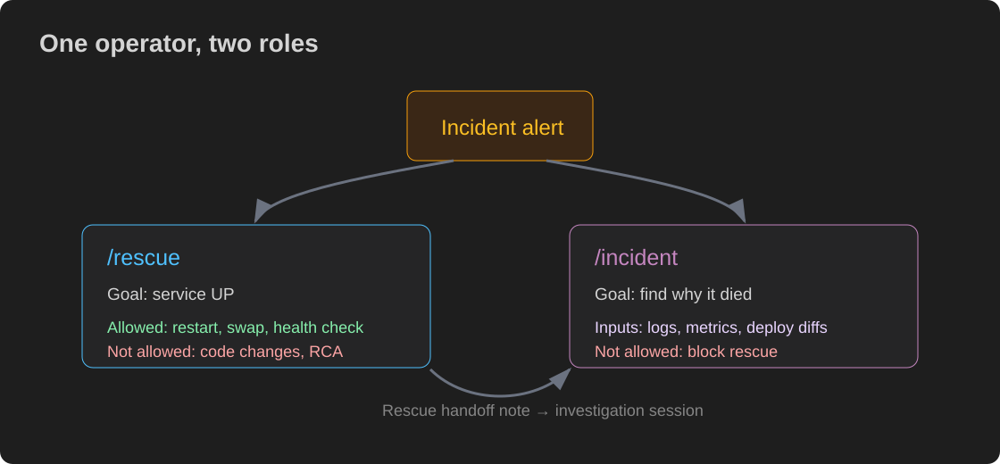
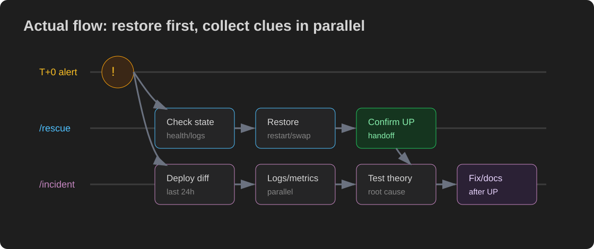

This post is also available on my blog. (한국어 버전은 여기)

The server is down. You are alone. You need to restore it now, but you also need to understand why it died.
Trying to do both at the same time slows both down. Teams with SRE practices open a war room and split roles. When operating alone, I found a smaller version of that structure: two AI sessions.
The Google SRE incident guidance is roughly: stop the bleeding, restore service, and preserve evidence for root cause analysis.
For a solo operator, that means service restoration and root-cause investigation should be separated.

This session does only one thing: restore service.
"The server is down. /rescue"This session does not edit code. It does not claim root cause.
This session does only one thing: find why it died.
"Session 1 is restoring service. You investigate root cause only. Do not edit code."[Alert]
↓
Open session 1 → "/rescue restore the server"
↓ (at the same time)
Open session 2 → "Session 1 is restoring. You investigate only.
Do not touch code. Start with last 24h deploy commits."
↓
Session 1: blue-green swap or restart
Session 2: logs, deploy commits, metrics in parallel
↓
Session 1 → recovery summary with last error logs
User → pass that summary to session 2
↓
Session 2: confirm theory → implement fix
The important instruction is that the two sessions must not edit the same code at the same time.
If the rescue session quickly guesses a root cause and edits code:
Separating rescue and investigation lets the investigation session collect evidence without panic.
Multiple investigation sessions sound useful, but they add coordination load. During an incident, the user now has to merge competing theories and decide which session is right.
Best setup: one rescue session + one investigation session.
Anthropic's Claude Cookbook has an SRE incident response agent: PagerDuty webhook -> Lambda -> Claude API -> automated analysis -> Slack report.
The practical setup today is: alert fires -> human opens chat -> run /rescue and /incident. It is not fully automated, but it is structured.
| /rescue session | /incident session | |
|---|---|---|
| Goal | Restore service | Find root cause |
| Code changes | No | Yes, after recovery |
| Timeline | Within 10 minutes | After service is back |
| Output | "Service is UP" | Fix PR + prevention |